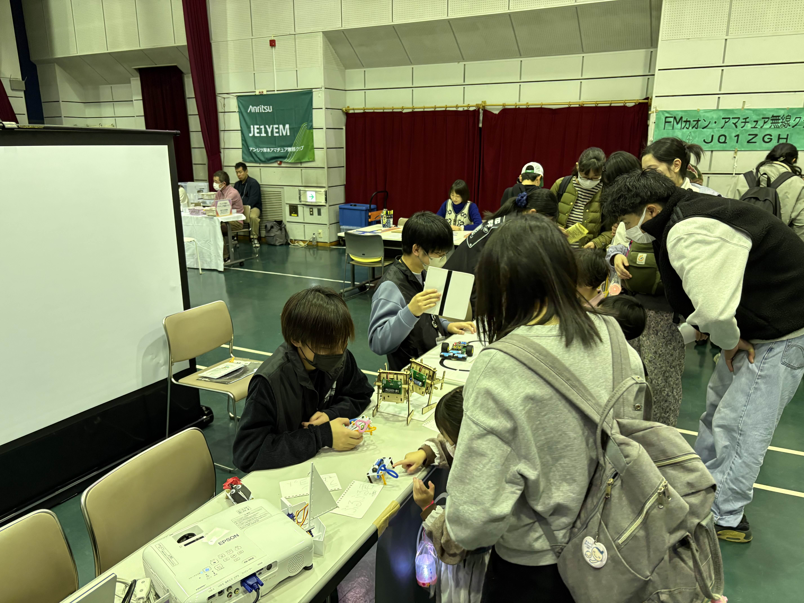
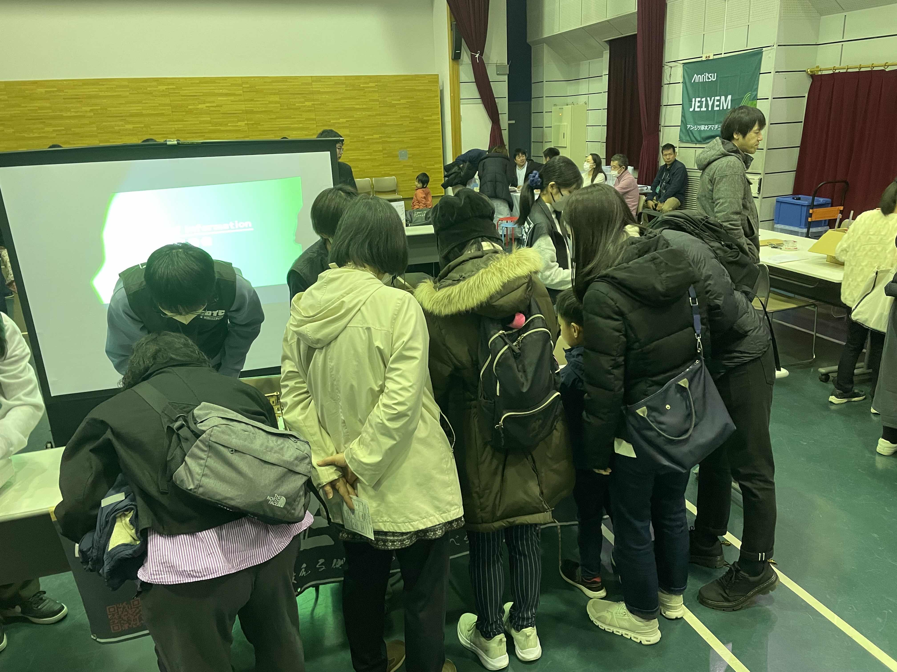

厚木市子ども科学館で開催された、サイエンスウィンターに参加しました！
今年も、子供たちにものづくりの楽しさを体験してもらうことを目的に、多くの団体が参加する本イベントに出展しました！
当団体としては今回で3回目の参加となりますが、回を重ねるごとに、ロボットを通じたものづくりの面白さをより多くの方に伝えられていると実感しています。
当日は本当にたくさんの方にご来場いただき、私たちのブースだけでも親子合わせて100名を超える方々にロボットに触れていただきました。
中には何度も遊びに来てくれる子どもたちの姿もあり、楽しんでもらえている様子が伝わってきて、とても嬉しかったです！

教える側にとっても学びのあるイベントでした！
今回のイベントは、子どもたちだけでなく、教える側にとっても多くの学びがある機会となりました。
ブースでは、来てくれた子どもたちにより興味を持ってもらえるよう、ロボットの仕組みや原理についてもできるだけわかりやすく説明することを心がけました。
回数を重ねる中で、「どうすれば伝わりやすいか」「どんな言い回しが興味を引くか」
といった点をそれぞれが工夫し、教える側としての成長も実感することができました！
また、ただ教えるだけでなく、子どもたちと一緒に遊びながら関わることで、私たち自身も楽しみながら参加することができたのが印象的です。

今回のイベントは、とても多くの収穫がある充実した機会となりました。
良かった点だけでなく、改善すべき点についても振り返り、今後の活動にしっかりと活かしていきたいと考えています。
そして、次回のイベントでも、さらに楽しんでいただけるよう工夫していきますので、またぜひ遊びに来ていただけると嬉しいです！